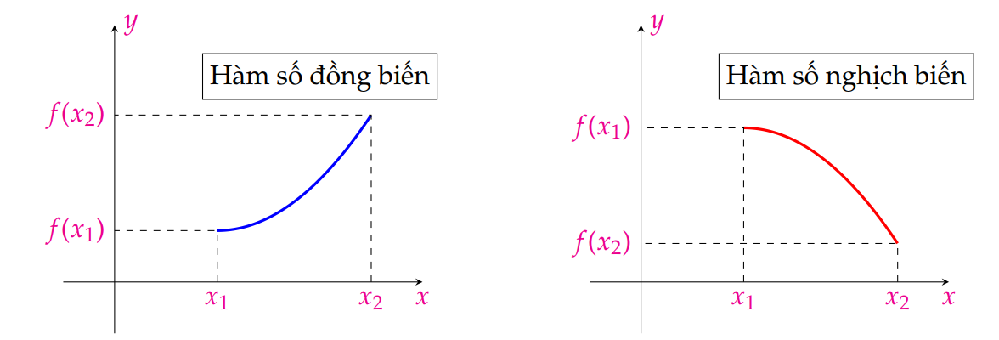

\section{Sự đồng biến, nghịch biến của hàm số}
\subsection{Tóm tắt lý thuyết}
\begin{dn}
Cho hàm số $f(x)$ xác định trên khoảng (đoạn hoặc nửa khoảng) $\mathcal{K}$ và $x_1,x_2\in \mathcal K$.
\begin{enumerate}
\item Hàm số $f$ gọi là đồng biến (tăng) trên $\mathcal K$ nếu $x_1 < x_2 \Rightarrow f(x_1) < f(x_2) $
\item Hàm số $f$ gọi là nghịch biến (giảm) trên $\mathcal {K}$ nếu $x_1 < x_2\Rightarrow f(x_1) > f(x_2)$.
\end{enumerate}
\end{dn}
\begin{note}
Nếu hàm số đồng biến trên $\mathscr{K}$ thì đồ thị đi lên từ trái sang phải; Nếu hàm số nghịch biến trên $\mathscr{K}$ thì đồ thị đi xuống từ trái sang phải.
\end{note}
\subsection{Tính đơn điệu và dấu của đạo hàm}
\begin{dl}
Cho hàm số $y = f(x)$ có đạo hàm trên $\mathscr{K}$.
\begin{itemize}
\item Nếu $f'(x) > 0$ với mọi $x$ thuộc $\mathscr{K}$ thì hàm số $f(x)$ đồng biến trên $\mathscr{K}$.
\item Nếu $f'(x) < 0$ với mọi $x$ thuộc $\mathscr{K}$ thì hàm số $f(x)$ nghịch biến trên $\mathscr{K}$.
\end{itemize}
\end{dl}
\begin{dl}
Cho hàm số $y = f(x)$ có đạo hàm trên $\mathscr{K}$.
Nếu $f'(x) \geq 0$ $\left(f'(x) \leq 0 \right)$ với mọi $x$ thuộc $\mathscr{K}$ và $f'(x) = 0$ chỉ tại một số hữu hạn điểm thì hàm số $f(x)$ đồng biến (nghịch biến) trên $\mathscr{K}$.\end{dl}
\subsection{Các dạng toán và phương pháp giải}
\begin{dang}[Xét sự đồng biến, nghịch biến của hàm số $y=f(x)$]
\begin{itemize}
\item Bước 1: Tìm tập xác định $\mathscr{D}$ của hàm số.
\item Bước 2: Tính $y'$. Tìm các điểm thuộc $\mathscr{D}$ mà tại đó $y'=0$ hoặc $y'$ không xác định.
\item Bước 3: Lập bảng biến thiên của hàm số.
\begin{itemize}
\item + Dòng $x$ ghi các đầu mút của các khoảng xác định, nghiệm của $y'$.
\item + Dòng $y'$ ghi dấu của $y'$.
\item + Dòng $y$ ghi chiều biến thiên của hàm số, giá trị cực trị, giá trị các giới hạn.
\end{itemize}
\item Bước 4: Nêu kết luận về các khoảng đồng biến và nghịch biến của hàm số.
\end{itemize}

\end{dang}